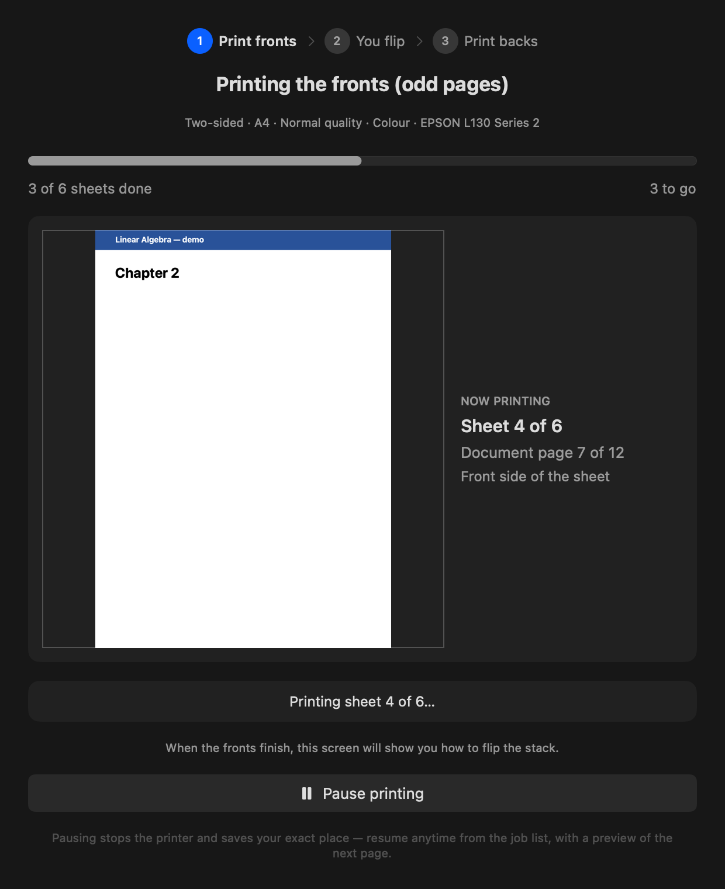
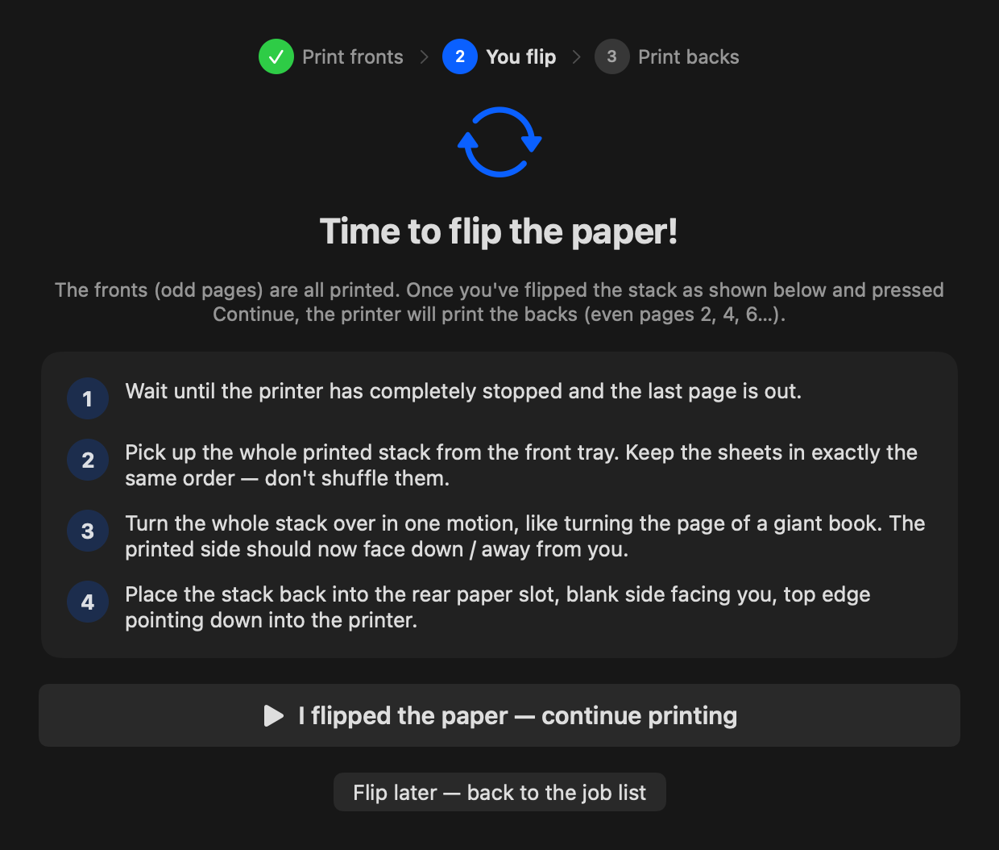
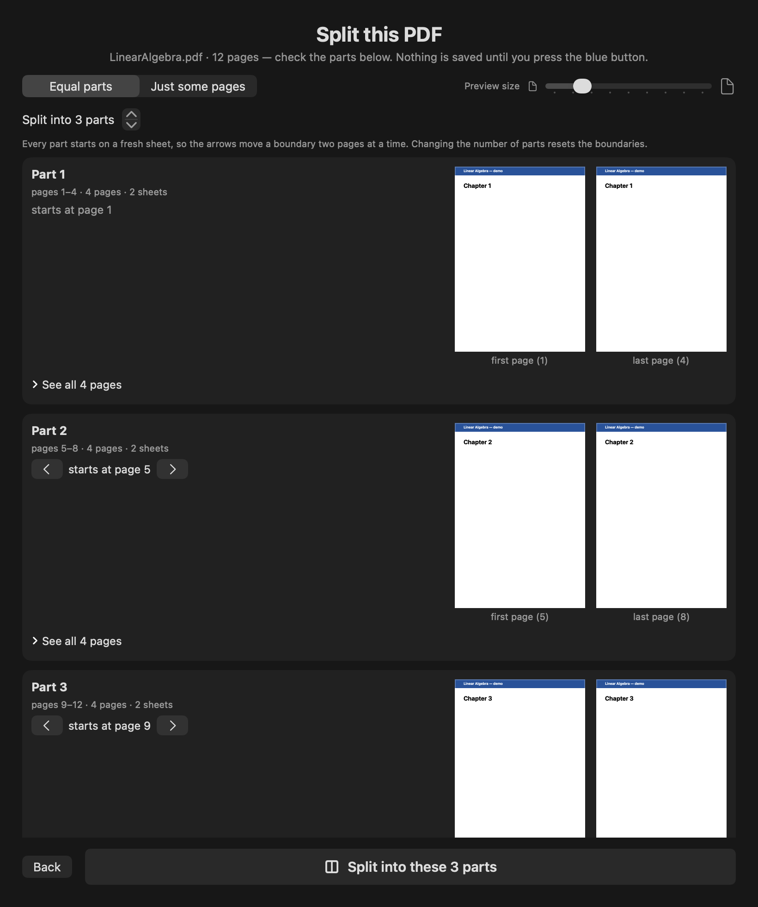
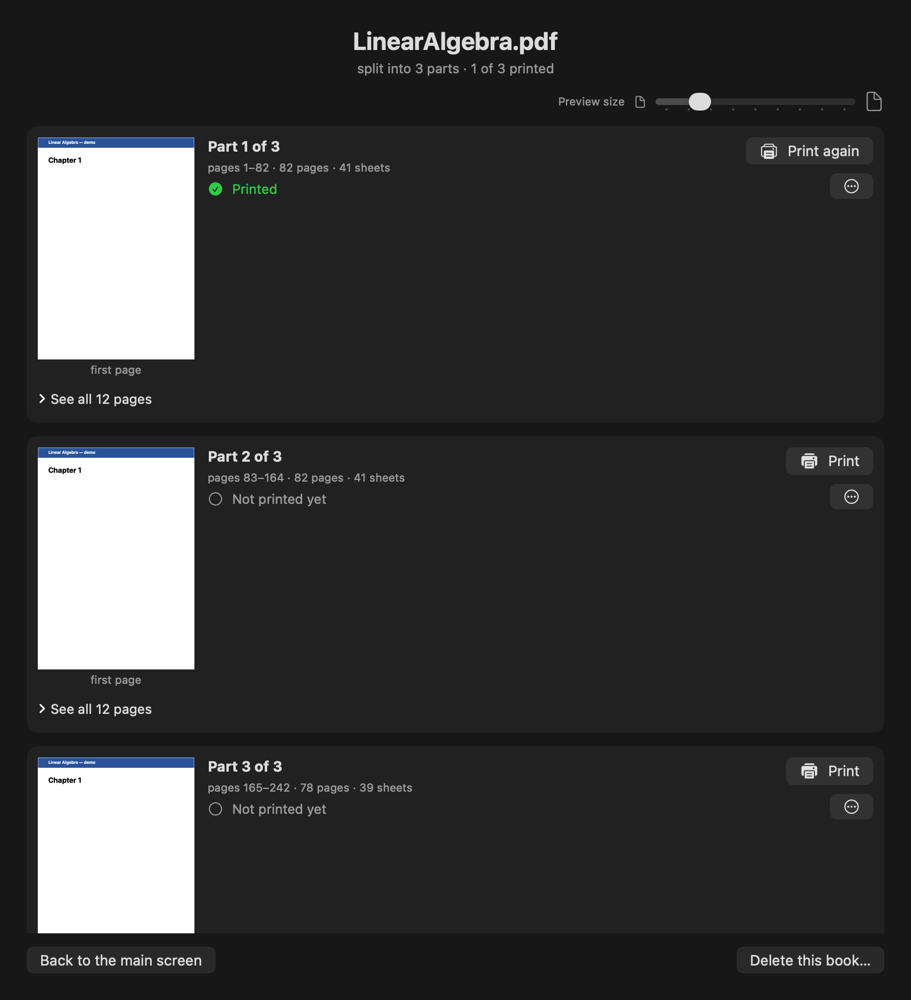

A native macOS app · built for the Epson L130
Print whole books, two‑sided, on a printer that can't.
Your printer has no duplexer. DuplexPrint prints the fronts, walks you through one flip of the stack, then prints the backs — and never loses its place, no matter what goes wrong.
fronts → flip once → backs
How it works
One guided flip. That's the whole trick.
Pick a PDF, choose paper, quality and colour once — then the app runs the show. Nothing prints until you confirm, and the screen always shows exactly which page is coming out.
Pass 1 · Fronts
Odd pages print
Live progress, sheet by sheet, with a preview of the exact page in the printer right now.
You · The flip
Turn the stack once
Step-by-step instructions for your exact printer. The app waits — nothing happens until you say go.
Pass 2 · Backs
Even pages print
Backs land perfectly behind their fronts. Done: a two-sided book from a one-sided printer.


The splitter
Turn a 242-page book into printable parts.
Big books are scary to print in one go. Split one into equal parts — every part starts on a fresh sheet — or pull out exactly the pages you type, like 5–20, 35, 40–42.
- See every boundary — first and last page thumbnails on each part, with arrows to nudge them.
- Open any page full-size before committing to anything.
- Duplex-safe — boundaries snap so fronts and backs never split across parts.


The library
It remembers where you left off. Always.
Every split becomes a book with per-part status — not printed, in progress, printed ✓. Print part one today, part three next month. Progress is saved after every single sheet.
- Quit, reboot, lose power — on launch it offers to resume from the exact sheet.
- Match against your stack — resuming shows a preview of the next page so you can check it against the paper in your hand.
- Nothing prints blindly — every job starts with a confirmation showing every setting it will use.
Self-healing
Built from real printing disasters.
Every failure mode below happened while printing real books. Each one is now handled automatically.
media-empty · jam · cover-open
Out of paper? It waits.
Plain-English instructions on screen and infinite patience — load paper and it just continues.
usb drop · driver wedge
Connection died? It recovers.
The dead job is cancelled and resubmitted automatically from the last completed sheet — for up to 30 minutes.
caffeinate -ims
The Mac stays awake.
Sleep cuts USB power mid-job. DuplexPrint holds the Mac awake for exactly as long as the printer needs it.
OutputOrder · skip-blank-page
Driver traps, defused.
The Epson driver ships with settings that reverse page order and break front/back pairing. Every job pins them safe.
Get it
Drag it in. Print a book.
Download the DMG, drag DuplexPrint to Applications, approve it once in System Settings (it's ad-hoc signed, not notarized) — and you're printing.